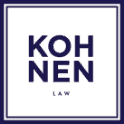

Kohnen Law · Website RedesignThree homepage concepts for Marc S. Kohnen, all built with the real content and assets from msklawyer.com.
Ivory, deep navy and brass with an editorial serif. Calm, premium and authoritative — sleek and confident without shouting. Built for trust.
Preview Design 1 →The current msklawyer.com — same navy & gold identity and same section order, rebuilt clean, fast and fully mobile-first. Familiar, just better.
Preview Design 2 →My best shot at winning clients — near-black, bone and crimson, oversized type and motion, with the front-page acquittal as the centerpiece. Unforgettable.
Preview Design 3 →Real headings, bio & copy from msklawyer.com throughout. Nav links point to the live msklawyer.com pages so internal link structure and SEO stay intact. Photos, logo, badges and reviews are pulled from Marc’s current site.